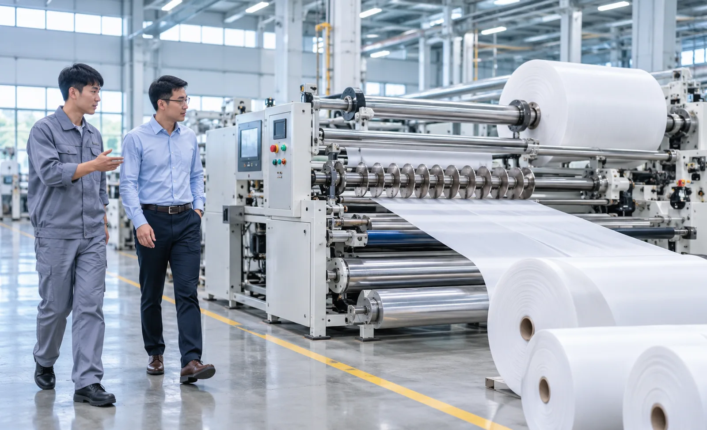
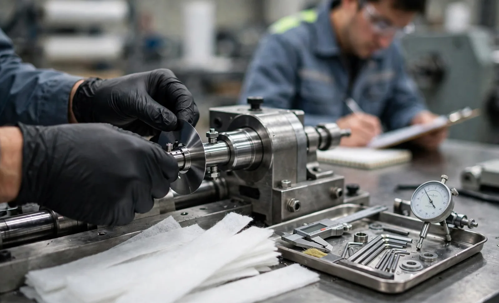

Published November 23, 2026 | By HDPTH Technical Editorial Team

The converting side of the nonwovens industry has a low barrier to entry: buy jumbo rolls of spunlace, spunbond or laminates, slit and rewind them into customer-specific widths, and sell to wipes brands, hygiene producers or industrial buyers. That accessibility is exactly why the first machine decision matters so much. Two startups with the same plan can end up with completely different unit economics depending on how well the machine matches the orders they chase.
This guide is written for entrepreneurs founding a converting operation, distributors adding roll-converting capacity, and purchasing engineers specifying their first capital equipment. It follows the decision in the order you will actually face it — product mix, machine size, automation level, the full budget, and the buying sequence.
Why the first machine defines your unit economics
A slitter rewinder is not a general-purpose purchase; it is a set of commitments. The unwind width you buy sets which parent rolls you can accept and which suppliers you can negotiate with. The knife system sets your minimum economic slit width and your changeover time, which together decide whether small orders are profitable or quietly loss-making.
These commitments are expensive to unwind. Widening a machine after delivery is rarely practical; retrofitting automation onto a basic frame costs more than ordering it built-in; and a machine that is wrong for your material spends its most valuable resource — operating hours — on setup experiments instead of sellable rolls. The cheapest quote is frequently the most expensive decision over a three-year horizon.
Start from the product mix, not the catalogue
Before comparing machines, write down the products you intend to sell in the first year, and be specific. Which substrates — spunlace wipes, hydrophilic spunbond topsheets, medical packaging laminates? Which GSM range, honestly weighted toward what you expect to ship most? Which finished-roll widths, diameters and core sizes do your target customers specify — 76 mm is the near-universal default, but some wipes buyers still want smaller legacy cores?
Then work backwards to the unwind. Parent roll suppliers quote jumbos in their own width and diameter standards, and those numbers — not your ambitions — define the unwind capacity that is actually useful. A machine sized for 2,000 mm jumbos is wasted money if the supplier you can actually contract with sells 1,400 mm rolls; the surplus is paid-for width you can never load.
Finally, test before you sign. Any credible supplier will run your material through trials, and a first-time buyer should treat this as non-negotiable — our guide to material trial testing before purchase explains how to structure one so it proves something. A startup that skips this step is buying a machine for a product it has never made.
Sizing the machine: width, speed and rewind configuration
Working width. Take the widest parent roll your product plan requires, add the trim margin, and stop there. For most first-time converting businesses in wipes, hygiene and light medical substrates, a working width between 1,300 and 1,600 mm covers the realistic supplier base. Buying “one size wider just in case” ties capital to capacity that will sit unloaded for years.
Speed. Nameplate speeds of 400 m/min look impressive on quotations and mean little in practice. What matters is the speed your line holds with stable tension, clean edges and consistent roll hardness — usually a fraction of nameplate. A solid 150 to 250 m/min line with excellent tension control and fast changeovers will outperform a faster machine in shipped rolls per week. Buy the top end only when a contracted customer’s volume genuinely needs it.
Rewind configuration. A simplex machine rewinds one finished roll at a time and is often sufficient for low-SKU production. Duplex or turret configurations rewind continuously through roll changes, which matters when you run many small orders per day. Match this to your order profile: if the business plan depends on more than four or five changeovers per shift, continuous rewinding starts paying for itself.
Automation: where a first machine should and should not spend
Automation money on a first slitter rewinder buys the most value where it is touched every roll. Three items sit at the top of the list. First, closed-loop tension control with load cells or a quality dancer — tension causes most winding defects, and open-loop control makes every product launch harder. Second, repeatable knife positioning: the ability to return to a saved lane pattern in minutes is what makes small orders profitable. Third, safety — guards, interlocks and emergency stops to current standards are not an upgrade option.
At the bottom of the list for most startups: fully automatic turrets with zero-speed splicing, automatic roll unloading, and factory-data integration. Each is a legitimate technology — we cover the trade-offs in our automation level buyer’s guide — but for a young business the labour they save is usually cheaper than the capital they cost. A semi-automatic line with disciplined recipes is the proven first-machine formula.

Budget beyond the machine: the costs first-timers miss
The most common startup error is treating the machine price as the budget. In practice, the machine is roughly 50 to 60 percent of year-one capital; reserve the rest:
Getting it running. Sea freight, customs, rigging and floor preparation, electrical supply, compressed air for pneumatic shafts and brakes — these routinely add a meaningful percentage of the machine price before a single roll is made.
Keeping it running. Spare blades and holders for the first year, wear parts, lubricants, and a spares package matched to the supplier’s recommendations. Blade consumption scales with metres cut, so a wipes-focused startup should price it per shift, not per quarter.
Making it sell. Operator training, commissioning support, and — the item nobody budgets — working capital. Parent roll inventory is cash on a shelf; a converting startup typically finances several weeks of jumbo stock before its first invoices are paid. Under-capitalised here, businesses with perfectly good machines still fail.
A practical buying sequence for the first machine
- Write a one-page product definition: substrates, GSM range, parent roll dimensions, finished widths, cores, changeover frequency.
- Confirm at least two parent roll suppliers can deliver those dimensions at the assumed price.
- Shortlist three machine suppliers and visit factories where possible; a build is a multi-year relationship.
- Run material trials with your own rolls on the candidate machines; keep samples as acceptance references.
- Compare quotations line by line — tension hardware, knife system, rewind configuration, spares, training — not only the total price.
- Write acceptance criteria into the contract: edge quality on your material, roll hardness and diameter tolerance, slit-width accuracy at speed, changeover time.
- Witness the factory acceptance test on your material before shipment; hold the balance payment against the protocol.
- Order the first-year spares and blade package with the machine, not after the first stoppage.
Choosing a first machine is one decision in a larger project: read it alongside our general nonwoven slitter rewinder buying guide and our breakdown of choosing the right automation level, then see the machine families behind these recommendations on our high-speed slitting machines product page.
Planning your first converting line?
Send HDPTH your product mix, parent roll dimensions and target widths. We will size the machine from your order profile, recommend the automation level that fits year one, and document the acceptance tests that protect your investment.
Submit Your Project InquiryFrequently asked questions
How much should a nonwoven converting startup budget for its first slitter rewinder?
Plan the machine as roughly 50 to 60 percent of year-one capital: the rest covers shipping and installation, utilities such as compressed air, spares and blades, training, and the working capital tied up in parent roll inventory. A common failure mode is buying the machine to the last dollar and having nothing left to run it.
What machine width makes sense for a first slitter rewinder?
Size the unwind from the widest parent roll your suppliers will actually sell you, not a hypothetical maximum. A 1,300 to 1,600 mm working width covers most wipes, hygiene and medical substrates; buying significantly wider than your parent rolls means paying for capacity you can never load.
Should a startup buy a manual or an automatic slitter rewinder?
Spend on what you touch every roll: closed-loop tension control, repeatable knife positioning and safety systems. Defer high-end automation such as automatic turrets, splicing and data integration until changeover frequency or labour costs justify it — a well-run semi-automatic line often beats an automated line nobody is trained to exploit.
Can one slitter rewinder support a whole converting startup?
Yes, if the product mix is coherent. One machine running two or three related substrates at sensible utilisation is a viable year-one plan; the risk comes from mixing products with incompatible widths, cores and tension windows. Define the product family first, then buy the machine that fits it.
What should a startup prove before paying the final machine instalment?
A witnessed run on your own material, not a supplier demo roll: edge quality against defined criteria, roll hardness and diameter consistency, slit-width tolerance at production speed, and measured changeover time. Put these in the acceptance protocol before signature and hold the balance payment against them.
Sources
- AIMCAL: web handling and converting education resources
- INDA: nonwoven industry technical resources on basis weight, testing and converting
- EDANA: nonwovens standards and test methods for fibre-based materials
- Converting Quarterly: articles on slitter rewinder selection and acceptance testing
- TAPPI: web handling references for paper, film and nonwoven converting